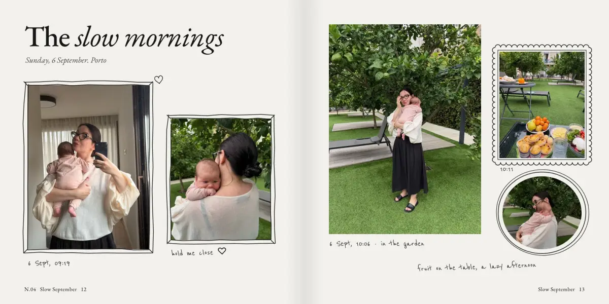
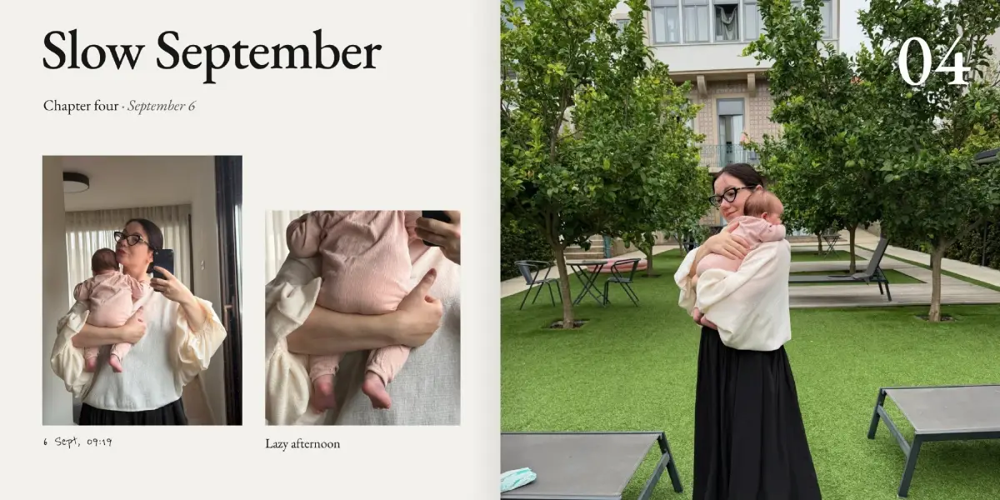

Photo Book Captions: What to Write on Every Page
Updated Nov 2026 · by
Olga, designer at ReMeet, 10 years in editorial design
Good photo book captions are short, specific, and honest. They tell the reader something the photo can't show on its own. This guide covers when to add captions, what type to use, where to place them, and includes 35+ examples sorted by book type. If you order through ReMeet, I can write them for you or leave them out entirely.

When captions help and when they don't
Not every photo needs words next to it. A strong portrait or a full-bleed landscape often works better silent. Adding text to a page like that just competes with the image.

Captions help when the photo can't tell the full story. A picture of a baby sleeping looks the same at two weeks and two months. Without a date or a note, you'll forget which. A group photo at a dinner table doesn't explain that it was the first time everyone was together in three years.
My rule of thumb: if a stranger could look at the photo and get the full picture, skip the caption. If context matters, write something short.
Three types of photo book captions
Every caption falls into one of three categories. Knowing which type fits helps when you're staring at a blank text box.
| Type | What it does | Example |
|---|
| Factual | Records who, where, when | "Lake Como, day three. June 2024." |
| Emotional | Captures a feeling or thought | "I didn't want to leave this spot." |
| Funny | Adds personality or an inside joke | "He insisted he wasn't tired. This was two minutes later." |
Most books work best with a mix. Start with factual captions for structure, then add emotional or funny ones where the moment calls for it. You don't need to pick one style and stick with it.
Where to place captions in your layout
Placement matters as much as the words. A caption in the wrong spot pulls the eye away from the photo instead of toward it.
- Below the photo is the most natural position. The reader looks at the image first, then reads down.
- On a white margin next to the photo works for longer notes. It gives the text room to breathe.
- Over the photo can look great on dark or blurry backgrounds, but it needs careful contrast. White text on a bright photo is unreadable.
- On a separate text page between spreads is best for longer stories, letters, or chapter introductions.
Keep captions consistent within each section. If one photo on a spread has text below it, don't put the other caption in a margin. For more on layouts, see my photo book layout tips.
How long should a caption be?
Shorter than you think. Here's a quick guide:
| Length | When to use it |
|---|
| 2 to 5 words | Dates, locations, names. "Portland, August 2024." |
| 1 sentence | A single observation or detail. This covers 80% of captions. |
| 2 to 3 sentences | A short story behind the photo. Use sparingly, maybe 3 to 5 times per book. |
| A full paragraph | Give it its own text page. Don't cram a paragraph next to a photo. |
A 30-page book might have 8 to 15 captions total. That's enough to anchor the story without crowding every page.
Want captions written for you?
Share your album link and any notes. I'll design every page and write captions based on what I see. First proof in 72 hours, from $29.
Start Your Book →
Photo book captions by book type
Baby book captions
Baby books need captions more than any other type. Milestones blur together fast. Write the date and the detail you'll forget.
- "Week two. She sleeps like this, arms straight up, every single time."
- "First bath. More crying than washing."
- "3 a.m. She's wide awake. I'm not."
- "Seven pounds, twelve ounces. The heaviest thing I've ever held."
- "Month four. He found his feet and hasn't looked up since."
- "Her first word was 'no.' She meant it."
- "The face she makes when she doesn't like the food."
Travel book captions
Travel captions should anchor the photo to a time and place. What surprised you, what you almost skipped, what you'd go back for.
- "Lisbon, day three. The restaurant we found by accident and went back to twice."
- "6:14 a.m. Worth the alarm."
- "We packed too much and wore the same three things."
- "The hike everyone said was easy. It was not easy."
- "Last evening. Nobody wanted to leave."
- "The street food we ate standing up in the rain."
- "This is the view from the wrong turn."
Wedding book captions
Wedding photos carry weight on their own, so captions can be minimal. Write what the camera couldn't record.
- "The vows I wrote at 2 a.m. the night before."
- "Everyone we love, in one room."
- "The cake was crooked. Nobody noticed."
- "His hands were shaking. So were mine."
- "The song we almost didn't pick for the first dance."
- "Ten minutes before the ceremony. Deep breath."
Family yearbook captions
The best family captions record the ordinary. Five years from now, you'll want to remember Tuesday dinners more than holidays.
- "Sunday morning. Nobody's dressed. Nobody cares."
- "Bedtime takes 45 minutes and three glasses of water."
- "Four different conversations at once. Home."
- "The backyard in summer. Everything important happens here."
- "She reads to him now. He pretends to listen."
- "First day of school, 2024. The backpack is bigger than she is."
- "Movie night. Same movie for the fourth time this month."
See family yearbook ideas for more on structuring a year into chapters.
Memorial book captions
Memorial books are the hardest to write for. Keep it simple. Let the photos carry the emotion and use captions for context.
- "Thanksgiving 2019. The last time all of us were together."
- "He told this story at every family dinner."
- "Her garden, July. She spent every morning here."
- "The handwriting on the back of this photo says 'Summer 82.'"
- "I still hear her laugh when I look at this."
- "Dad's workshop. Everything still exactly where he left it."
If you have handwritten notes, letters, or cards from the person, scan them and send them with your photos. I place them at high resolution next to the matching images. A handwritten note in someone's real handwriting carries more weight than any typed caption.
How to tell ReMeet what you want
When you share your album link, include a short note about captions. Here are three options I offer:
- No captions. Clean pages, photos only. Some of my best books have zero text.
- Factual captions. I add dates, locations, and names based on photo metadata and what I can see. Short and functional.
- Full captions with stories. Send me a list of notes, memories, or details alongside your photos. I write and place captions that match the layout. You review everything before it goes to print.
You can also send captions in any format: a text file, voice memos, notes in the album description, or even a messy email. I'll sort it out and place each note where it belongs.
If you're not sure what you want, start without captions. I'll send the first proof clean, and you can tell me where you want text added. It's easier to add captions to a finished layout than to rearrange a layout around too many words.
Pricing
| What you get | Price |
|---|
| Designed PDF, up to 30 pages | $29 |
| Designed PDF, up to 100 pages | $79 |
| Printed hardcover | From $69 after approval |
| Printed premium layflat | From $129 after approval |
| Extra printed copy | $69 |
| Shipping (US, Canada) | Included |
| Shipping (Europe) | +$15 |
Captions are included in every option. Whether you send your own or ask me to write them, there's no extra charge. More about what's included.

Frequently asked questions
Do I need to write captions for every page?
No. Most good photo books have captions on about a third of the pages. Some pages are stronger without text. If a photo tells the whole story on its own, leave it alone. I usually recommend 8 to 15 captions in a 30-page book.
What if I can't think of anything to write?
Start with the facts: who, where, when. "Mom's birthday, March 2024" is a perfectly good caption. You don't need to be clever. If you order through ReMeet, I can write captions for you based on what I see in the photos and any notes you share.
Should I use quotes in a photo book?
One or two quotes can work well as chapter openers or on the closing page. More than that and the book starts sounding impersonal. Always pair quotes with your own words elsewhere so the book stays yours.
Can I include handwritten notes instead of typed captions?
Yes. Scan or photograph handwritten notes, birthday cards, or kids' drawings and send them with your photos. I place them at high resolution next to the matching photos. A handwritten note carries more weight than any typed caption.
How do I tell ReMeet what captions I want?
When you share your album link, include a note with your preference: no captions, factual captions only, or full captions with stories. You can also send a list of notes alongside your photos and I'll place them where they fit best.
Send your photos. I'll handle the words.
Share your album link and I'll design every page. Captions are optional, and so is printing. First draft in 72 hours, from $29.
Start Your Book →